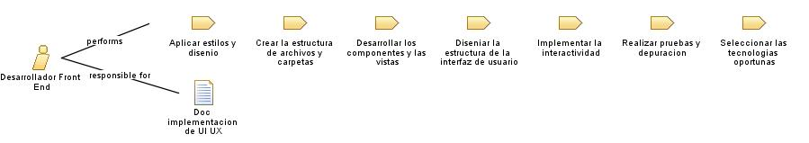

Role: Desarrollador Front End
Rol el cual se encarga de realizar la implementacion de los prototipos de interfaces graficas a nivel de codigo.
Relationships

Primary Performs
Aplicar estilos y disenio
Crear la estructura de archivos y carpetas
Desarrollar los componentes y las vistas
Diseniar la estructura de la interfaz de usuario
Implementar la interactividad
Realizar pruebas y depuracion
Seleccionar las tecnologias oportunas
Modifies
Doc implementacion de UI UX
Main Description
Rol el cual se encarga de realizar la implementacion de los prototipos de interfaces graficas a nivel de codigo.